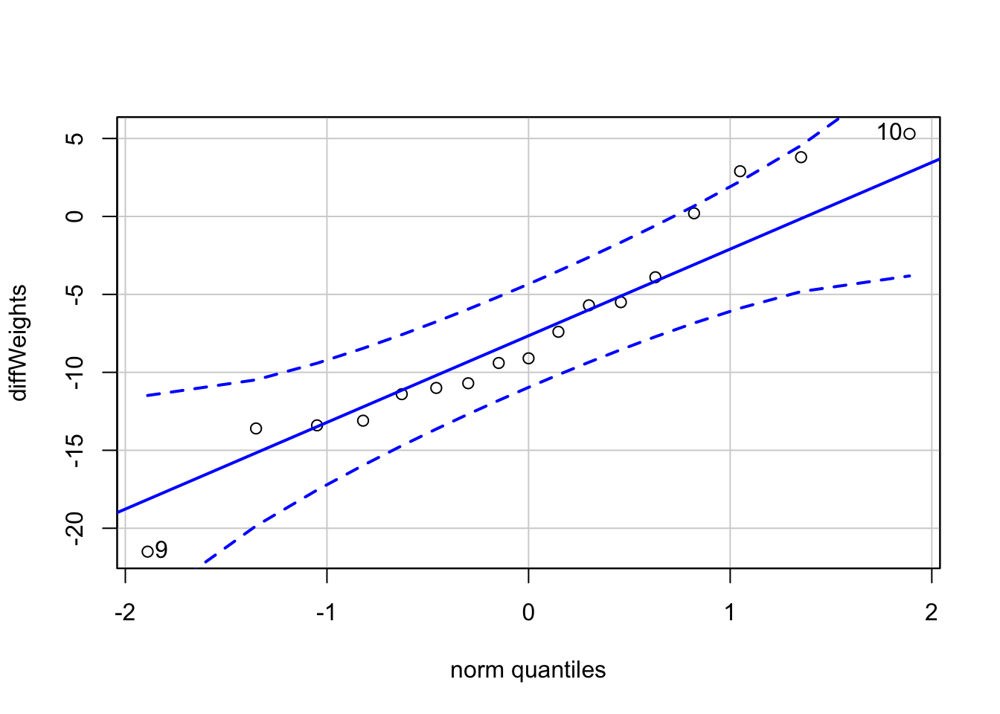
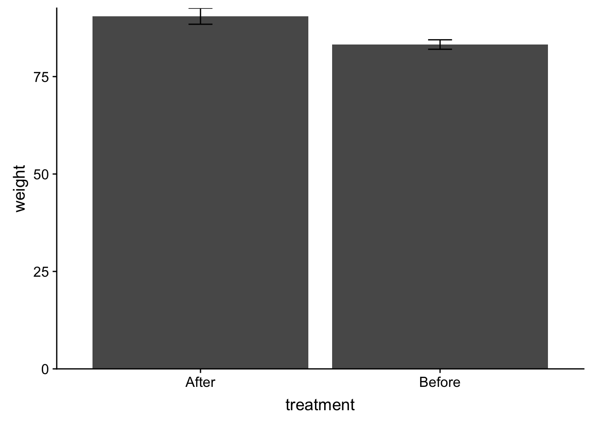
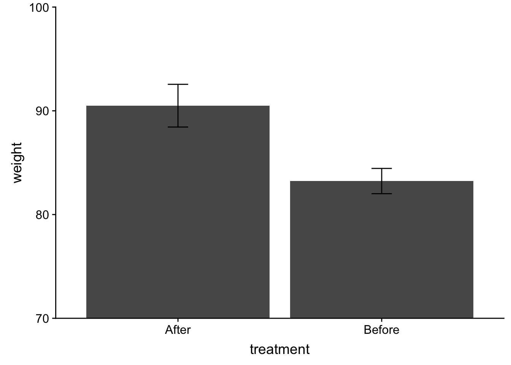
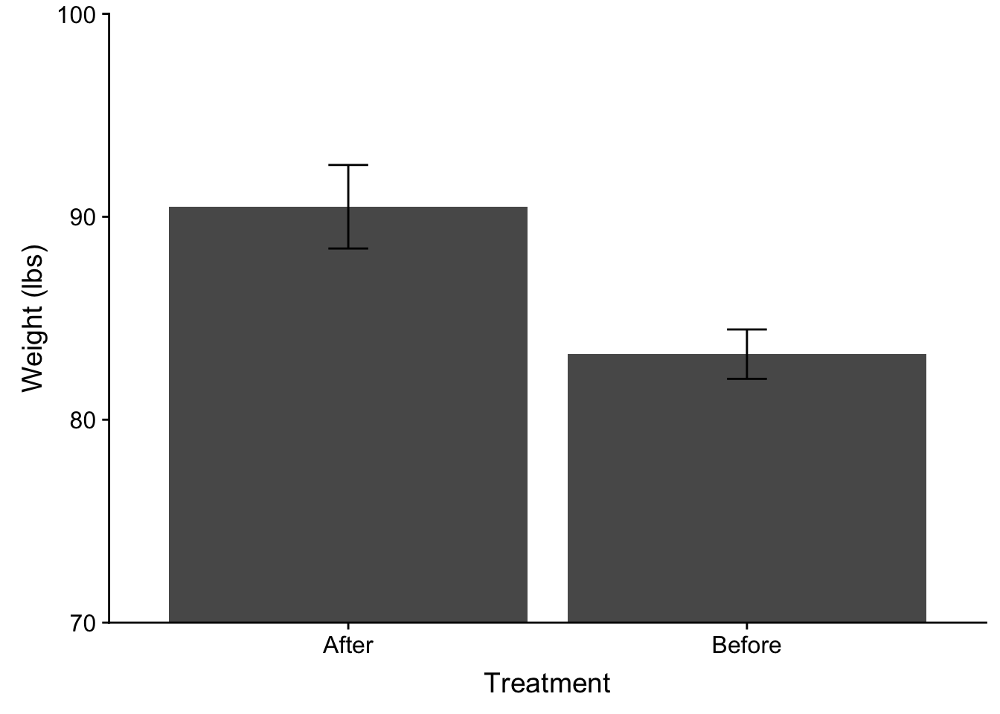
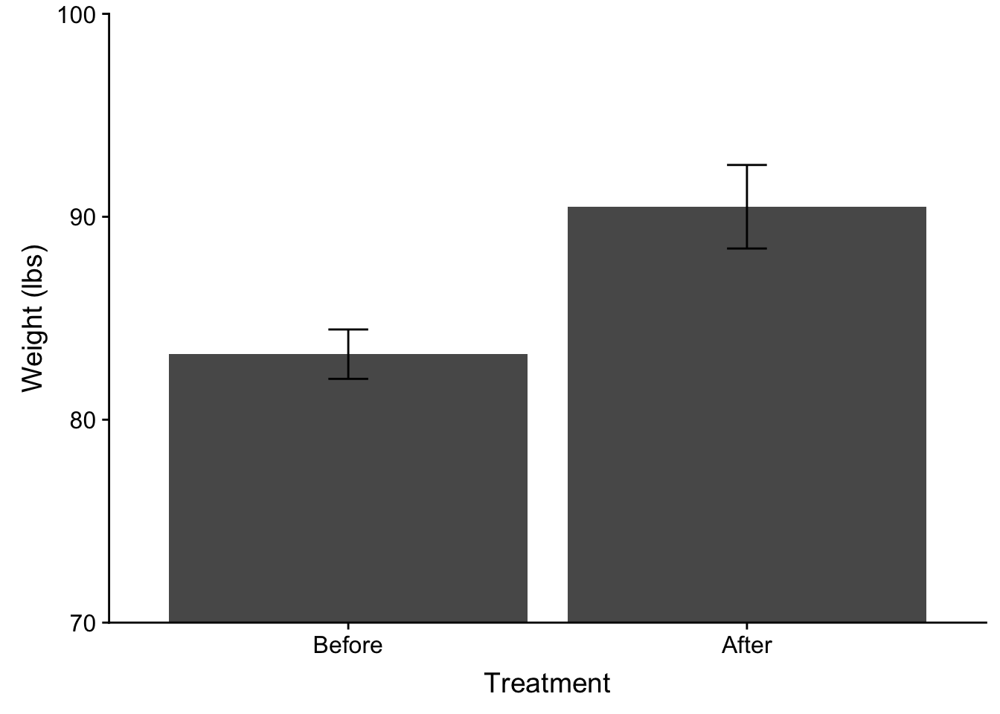
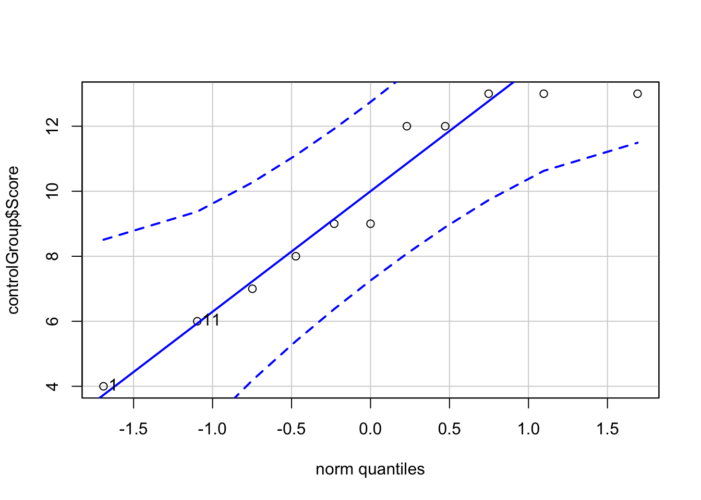
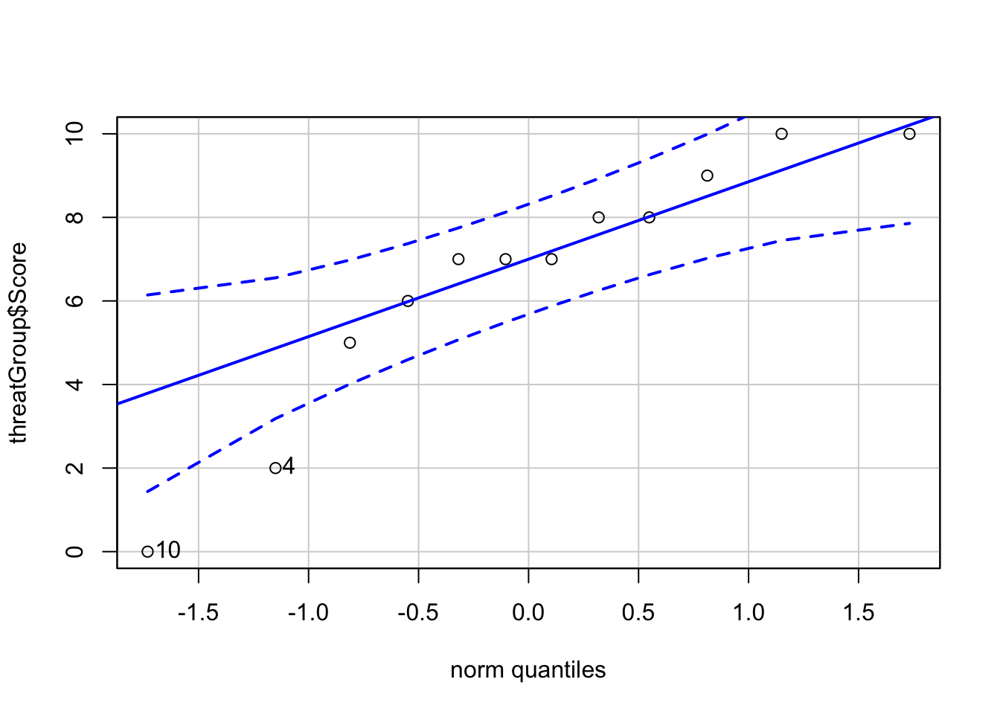

Week 7 Testing differences in means: t-test
This week we covered when and how to conduct a \(t-test\). We use a t-test to assess whether the observed difference between sample means is greater than would be predicted be chance. Both the Field text and Howell text do a wonderful job of explaining t-tests conceptually so I will defer to those experts on matters of the underlying their statistical basis. Instead my goal this week is to walk through some examples on performing, interpreting, and reporting t-tests using R.
This walkthough assumes that the following packages are installed and loaded on your computer:
pacman::p_load(tidyverse, car, cowplot, lsr)7.1 Things to consider before running the t-test
Before running a t.test there are a few practical and statistical considerations that must be taken. In fact, these considerations extend to every type of analysis that we will encounter for the remainder of the semester (and indeed the rest of your career) so it would be good to get in the habit of running through your checks. In what proceeds here I will walk step by step with how I condunct a t.test (while also highlighting certain decision points as they come up).
7.1.1 What is the nature of your sample data?
In other words where is the data coming from? Is it coming from a single sample of participants? Is it coming from multiple samples of the SAME participants? Is it coming from multiple groups of participants. This will not only determine what analysis you choose to run, but in also how you go about the business of preparing to run this analysis. Of course, truth be told this information should already be known before you even start collecting your data, which reinforces an important point, your central analyses should already be selected BEFORE you start collecting data! As you design your experiments you should do so in a way in which the statistics that you run are built into the design, not settled upon afterwards. This enables you to give the tests you perform the most power, as you are making predictions about the outcomes of your test a priori. This will become a major theme on the back half of the class, but best to introduce it now.
For this week, it will determine what test we will elect to perform. Let’s grab some sample data from the Howell text (Table 7.3):
Description from Howell: Everitt, in Hand, et al., 1994, reported on family therapy as a treatment for anorexia. There were 17 girls in this experiment, and they were weighed before and after treatment. The weights of the girls, in pounds, is provided in the data below:
Tab7_3 <- read_delim("https://www.uvm.edu/~dhowell/methods8/DataFiles/Tab7-3.dat",
"\t", escape_double = FALSE, trim_ws = TRUE)## Parsed with column specification:
## cols(
## ID = col_character(),
## Before = col_double(),
## After = col_double()
## )So what is known: we have 17 total participants from (hypothetically) the same population that are measured twice (once Before treatment, and once After treatment). Based upon the experimental question we need to run a paired-sample (matched-sample) test. (Although I’ll use this data to provide an example of a one-sample test later on).
7.1.2 What is the structure of your data file?
Before doing anything you should always take a look at your data:
show(Tab7_3)## # A tibble: 17 x 3
## ID Before After
## <chr> <dbl> <dbl>
## 1 01 83.8 95.2
## 2 02 83.3 94.3
## 3 03 86 91.5
## 4 04 82.5 91.9
## 5 05 86.7 100.
## 6 06 79.6 76.7
## 7 07 76.9 76.7
## 8 08 94.2 102.
## 9 09 73.4 94.9
## 10 10 80.5 75.2
## 11 11 81.6 77.8
## 12 12 82.1 95.5
## 13 13 77.6 90.7
## 14 14 83.5 92.6
## 15 15 89.9 93.8
## 16 16 86 91.7
## 17 17 87.3 98So what do we have here, three columns:
ID: the participant numberBefore: participants’ weights before treatmentAfter: participants’ weights after treatment
Most important for present purposes this data is in WIDE format—each line represents a participant. While this might be intuitve for tabluar visualization, many statistical softwares prefer when LONG format, where each line represents a single observation (or some mixed of WIDE and LONG like SPSS).
** [See this page for a run down of WIDE v. LONG format] (https://www.theanalysisfactor.com/wide-and-long-data/)
** More, for those that are interested I suggest taking a look at these two wonderful courses on DataCamp:
7.1.2.1 Getting data from WIDE to LONG
So the data are in wide format, each line has multiple observations of data that are being compared. Here both Before scores and After scores are on the same line. In order to make life easier for analysis and plotting in ggplot, we need to get the data into long format (Before scores and After scores are on different lines). This can be done using the gather() function from the tidyr package. We touched briefly on this function in this week’s lecture. Here we go into a little more detail.
Before gathering, one thing to consider is whether or not you have a column that defines each subject. In this case we have ID. This tells R that these data are coming from the same subject and will allow R to connect these data when performing analysis. That said, for t.test() this is not crucially important—t.test() assumes that the order of lines represents the order of subjects, e.g., the first Before line is matched to the first After line. Later on when we are doing ANOVA, however, this participant column will be important an we will need to add if it is missing.
Using gather(): It may first make sense to talk a bit about the terminology that this function uses. For every data point you have a key and a value. Think of the key as how the data point is defined or described, while the value is the measure of the data point. Typically in research we describe the data in terms of the condition under which it was collected—so if it helps, think of the key as your IV(s) and the value as your DV.
With this data, our values would be the weights of each participant. The keys would be how they are differentiated, Before and After. So for value I would input “weight” and for key I might choose “treatment” noting that the levels are Before-treatment and After-treatmemt.
One other thing that I have to consider is that I don’t want every column of my data gathered. For example in this case I don’t want my ID column gathered, but rather duplicated. Let’s look at what happens if I just gather:
gather(data = Tab7_3, key = "treatment", value = "weight")## # A tibble: 51 x 2
## treatment weight
## <chr> <chr>
## 1 ID 01
## 2 ID 02
## 3 ID 03
## 4 ID 04
## 5 ID 05
## 6 ID 06
## 7 ID 07
## 8 ID 08
## 9 ID 09
## 10 ID 10
## # ... with 41 more rowsThat’s not right! In order to overcome this I need to exclude the column(s) that I don’t want gathered. What R will do is copy those appropriately. This can be accomplished by stating with columns for the original data set you do not want gathered at the end of the gather() function, placing a “-” (negative sign) in front of them. In this case I don’t want the first column, ID gathered, so:
# '-1' here means exclude the first column
gather(data = Tab7_3, key = "treatment", value = "weight", -1)## # A tibble: 34 x 3
## ID treatment weight
## <chr> <chr> <dbl>
## 1 01 Before 83.8
## 2 02 Before 83.3
## 3 03 Before 86
## 4 04 Before 82.5
## 5 05 Before 86.7
## 6 06 Before 79.6
## 7 07 Before 76.9
## 8 08 Before 94.2
## 9 09 Before 73.4
## 10 10 Before 80.5
## # ... with 24 more rows# or, '-ID' means exclude the column named ID, both will work. note that I'm
# just making this output invisible to avoid duplicates:
gather(data = Tab7_3, key = "treatment", value = "weight", -ID) %>% invisible()Ok data is structured correctly, on to the next step.
7.1.3 Testing assumptions
Remember that you should always test to see if the data fit the assumptions of the test you intend to perform. In this case, we need to assess two things:
7.1.3.1 Is the data normally distributed?
Knowing the design of your experiment also has implications for testing your assumptions. For example, whether you have a paired (matched) sample design (e.g., two samples from the same participants) or an independent sample design (e.g., two groups) determines how you go about the business of testing the normality assumption. If you have an independent samples test, you test each sample seperately, noting measures of skew, kurtosis, inspecting the qqPlot, and Shapiro-Wilkes test (though acknowledging that SW is very sensitive). However, if you are running a paired (matched) samples test, you need to be concerned with the distribution of the difference scores. In the present example we are comparing participants’ weights Before treatment to their weight After.
First, let me save my gathered data to a data_frame Tab7_3_gathered and then filter() accordingly for Before and After (though note that you could elect to gather after this step and simply use the Before and After columns for the original dataset):
Tab7_3_gathered <- gather(data = Tab7_3, key = "treatment", value = "weight", -ID)
beforeTreatment <- filter(Tab7_3_gathered, treatment == "Before")
afterTreatment <- filter(Tab7_3_gathered, treatment == "After")And now compute the difference scores, and run my assumption tests:
diffWeights <- beforeTreatment$weight - afterTreatment$weight
psych::describe(diffWeights)## vars n mean sd median trimmed mad min max range skew kurtosis
## X1 1 17 -7.26 7.17 -9.1 -7.15 5.93 -21.5 5.3 26.8 0.18 -0.77
## se
## X1 1.74car::qqPlot(diffWeights)
## [1] 9 10shapiro.test(diffWeights)##
## Shapiro-Wilk normality test
##
## data: diffWeights
## W = 0.9528, p-value = 0.50237.1.3.2 Is the data variability homogeneous?
Another important assumption is that the variablility within each sample is similar. For a t-test this can be tested by using the leveneTest() from the car package:
# using long-format enter as a formula:
car::leveneTest(weight ~ treatment, data = Tab7_3_gathered, center = "mean")## Warning in leveneTest.default(y = y, group = group, ...): group coerced to
## factor.## Levene's Test for Homogeneity of Variance (center = "mean")
## Df F value Pr(>F)
## group 1 3.64 0.06542 .
## 32
## ---
## Signif. codes: 0 '***' 0.001 '**' 0.01 '*' 0.05 '.' 0.1 ' ' 1You’ll note above I elected to mean center my samples. This is consistent with typical practive although “median” centering may be more robust (both Field and Howell reading this week get into the particulars of this test).
Given that my obtained Pr(>F), or p-value of Levene’s F-test, is greater than .05 I may elect to assume that my variances are equal. However, if you remained skeptical, there are adjustments that you may make. This includes adjusting the degrees of freedom according to the Welch-Satterthwaite. Recall later on that we are looking at our obtained \(t\) value with respect to the number of \(df\). This adjustment effectively reduces the \(df\) in turn making your test more conservative.
7.1.4 Getting the descriptive stats and plotting the means.
Finally, as we will be performing a test of difference in means, it would be a good idea to get descriptive measures of means and variability for each group. Indeed, these data were already obatined when we used psych::describe() to assess the normailty of each sample. Here I’ll just do it again to get these values:
psych::describeBy(Tab7_3_gathered$weight, group = Tab7_3_gathered$treatment)##
## Descriptive statistics by group
## group: After
## vars n mean sd median trimmed mad min max range skew kurtosis
## X1 1 17 90.49 8.49 92.6 90.77 3.85 75.2 101.6 26.4 -0.74 -0.93
## se
## X1 2.06
## --------------------------------------------------------
## group: Before
## vars n mean sd median trimmed mad min max range skew kurtosis
## X1 1 17 83.23 5.02 83.3 83.15 4.15 73.4 94.2 20.8 0.15 -0.29
## se
## X1 1.22Typically along with the mean, you need to report a measure of variability of your sample. This can be either the SD, SEM, or if you choose the 95% CI, although this is more rare in the actual report. See the supplied HW example and APA examples on BOX for conventions on how to report these in your results section.
- Plotting in ggplot *
I’ve mentioned several times the limits and issues with plotting bar plots, but they remain a standard, so we will simply proceed using these plots. But I’ll note that boxplots, violin plots, bean plots, and pirate plots are all modern alteratives to bar plots and are easy to execute in ggplot(). Try a Google search.
In the meantime, to produce a bar plot in R we simply modify a few of the arguments that we are familiar width.
Here is the code for plotting these two groups:
ggplot(data = Tab7_3_gathered, aes(x = treatment, y = weight)) + stat_summary(fun.y = "mean",
geom = "col") + stat_summary(fun.data = "mean_se", geom = "errorbar", width = 0.1) +
scale_y_continuous(expand = c(0, 0)) + theme_cowplot()
Breaking this down line-by-line:
ggplot(data = Tab7_3_gathered, aes(x=treatment, y=weight)): standard fare for starting aggplot. See the Appendix treatment on intro toggplotto refresh your memory (or the DataCamp course).stat_summary(fun.y = "mean", geom = "col"):stat_summary()gets summary statistics and projects them onto the geom of your choice. In this case we are getting the mean values,fun.y = "mean"and using them to create a column plotgeom = "col".stat_summary(fun.data = "mean_se", geom = "errorbar", width = .1): here we are greating error bars,geom = "errorbar". Important to note here is that error bars require knowing three values: mean, upper limit, and lower limit. Whenever you are asking for a single value, like a mean, you usefun.y. When multiple values are needed you usefun.data. Here “mean_se” requests Standard error bars. Other alternatives include 95% CI “mean_cl_normal” and Standard deviation “mean_sdl”. Thewidthargument adjusts the width of the error bars.scale_y_continuous(expand = c(0,0)): TypicallyRwill do this strange thing where it places a gap bewteen the data and thex-axis. This line is a hack to remove this default. It says along the y-axis add0expansion (or gap).theme_cowplot(): quick APA aesthetics.
You may also feel that the zooming factor is off. This may especially be true in cases where there is little visual discrepency between the bars. To “zoom in” on the data you can use coord_cartesian(). For example, you might want to only show the range between 70 lbs and 100 lbs. When doing this, be careful not to truncate the upper limits of your bars and importantly your error bars.
ggplot(data = Tab7_3_gathered, aes(x = treatment, y = weight)) + stat_summary(fun.y = "mean",
geom = "col") + stat_summary(fun.data = "mean_se", geom = "errorbar", width = 0.1) +
scale_y_continuous(expand = c(0, 0)) + theme_cowplot() + coord_cartesian(ylim = c(70,
100))
Additionally, to get this into true APA format I would need to adjust my axis labels. Here capitalization is needed. Also, because the weight has a unit measure, I need to be specific about that:
ggplot(data = Tab7_3_gathered, aes(x = treatment, y = weight)) + stat_summary(fun.y = "mean",
geom = "col") + stat_summary(fun.data = "mean_se", geom = "errorbar", width = 0.1) +
scale_y_continuous(expand = c(0, 0)) + theme_cowplot() + coord_cartesian(ylim = c(70,
100)) + xlab("Treatment") + ylab("Weight (lbs)")
Finally, you may have notice that the order of Treatment on the plot is opposite of what we might like to logically present. In this case the “After” data comes prior to the “Before” data on the x-axis. This is because R defaults to alphabetical order when loading in data. To correct this I can use scale_x_discrete() and specify the order that I want in limits:
ggplot(data = Tab7_3_gathered, aes(x = treatment, y = weight)) + stat_summary(fun.y = "mean",
geom = "col") + stat_summary(fun.data = "mean_se", geom = "errorbar", width = 0.1) +
scale_y_continuous(expand = c(0, 0)) + theme_cowplot() + coord_cartesian(ylim = c(70,
100)) + xlab("Treatment") + ylab("Weight (lbs)") + scale_x_discrete(limits = c("Before",
"After"))
All good (well maybe check with Sierra first)! One other thing to consider (although please do not worry about it here) is the recent argument that when dealing with repeated measures data you need to adjust you error bars. See this pdf by Richard Morey (2005) for more information on this issue.
7.2 Performing the t-test (Paired sample t-test)
Okay, now that we’ve done all of our preparation, we’re now ready to perform the test. We can do so using the t.test() function. In this case, the experimental question warrants a paired samples t-test. Given that our Levene’s test failed to reject the null, we will assume that our variances are equal.
Again, since we’ve got long-format data we will use the formula syntax:
t.test(weight ~ treatment, data = Tab7_3_gathered, paired = T, var.equal = T)##
## Paired t-test
##
## data: weight by treatment
## t = 4.1802, df = 16, p-value = 0.0007072
## alternative hypothesis: true difference in means is not equal to 0
## 95 percent confidence interval:
## 3.580571 10.948840
## sample estimates:
## mean of the differences
## 7.264706The output provides us with our \(t\) value, the \(df\) and the \(p\) value. It also includes a measure of the 95% CI, and the mean difference. Remember that the null hypothesis is that there is no difference between our two samples. In the case of repeated measures especially, it makes sense to think of this in terms of a difference score of change, where the null is 0. The resulting interpretation is that on average participants’ weight increased 7.26 pounds due to the treatment, with a 95% likelihood that the true mean change is between 3.58 lbs and 10.95 lbs. Important for us is that 0 is not in the 95% CI, reinforcing that there was indeed a non-zero change (rejecting the null).
7.3 Measuring effect size
As always, rejecting the null due to a significant \(p\) value is not the end of the story. The absolute null is almost always guarenteed to be false. The question is whether or not you have compelling evidence to demonstrate it so. For example I likely could have collected data from 1000 participants here and found a “significant” difference with a weight gain of 0.5 lbs (\(p<.05\)). Would we feel like that was compelling evidence of the effect of the treatment? Probably not!
Whenever you report any statistic, you need to report an effect size. For \(t\) tests, the appropriate effect size measure is Cohen’s D. Cohen’s D expresses the observed difference as a ratio of the standard deviation of the sample(s)—in this respect its conceptually similar to our understanding of the standard distribution where we understand the magnitude of any score as expressed in the number of standatd deviations away from a 0 mean. Here, the mean difference betweem means (7.26) is divided by either the pooled standard deviations of both samples (weighted average) or the standard deviation of one of the samples. For example using the Before group SD:
\[D = \frac{\mid \bar{X}_{before}-\bar{X}_{after} \mid}{SD_{before}} = \frac{7.26}{5.02}\]
Typically you will use the pooled standard deviation, though in some circumstances it may make sense to use the standard deviation of a single group. For example if your variences are unequal you may elect to use the SD of the control group, that way you understand the observed change in scores in scales of magnitude to the control.
Let’s calculate Cohen’s D the pooled variance, and only using the varience of a single group. We use lsr::cohensD() with the formula syntax:
# pooled SD
lsr::cohensD(weight ~ treatment, data = Tab7_3_gathered, method = "pooled")## [1] 1.042123# using SD of the first group (alphabetical order): After
lsr::cohensD(weight ~ treatment, data = Tab7_3_gathered, method = "x.sd")## [1] 0.8560091# using SD of the first group (alphabetical order): Before
lsr::cohensD(weight ~ treatment, data = Tab7_3_gathered, method = "y.sd")## [1] 1.448107As you can see you end up with very different values depending on what you choose. As I said, the default is the “pool” your variences. If you elect to do otherwise you’ll need to mention it in your report.
7.4 Other \(t\) tests:
7.4.1 One sample:
The data in our example warranted running a paired t-test. However, as noted we can run a t.test() to compare a single sample to a single value. For example it might be reasonable to ask whether or not the 17 adolescent girls that Hand, et al., 1994 treated were different from what would be considered the average weight of a teenaged girl. A quick Google search suggests that the average weight of girls 12-17 in 2002 was 130 lbs. How does this compare to Hand et al.’s participants Before treatment? We can run a one sample t-test to answer this question:
beforeTreatment <- filter(Tab7_3_gathered, treatment == "Before")
t.test(beforeTreatment$weight, mu = 130)##
## One Sample t-test
##
## data: beforeTreatment$weight
## t = -38.44, df = 16, p-value < 2.2e-16
## alternative hypothesis: true mean is not equal to 130
## 95 percent confidence interval:
## 80.65007 85.80876
## sample estimates:
## mean of x
## 83.22941Yes, this group of girls was significantly underweight compared to the national average.
7.4.2 Independent samples example
We run an independent samples t-test when we have no reason to believe that the data in the two samples is meaningfully related in any fashion. Consider this example from Howell, Table 7.7 regarding Joshua Aronson’s work on stereotype threat:
Joshua Aronson has done extensive work on what he refers to as “stereotype threat,” which refers to the fact that “members of stereotyped groups often feel extra pressure in situations where their behavior can confirm the negative reputation that their group lacks a valued ability” (Aronson, Lustina, Good, Keough, Steele, & Brown, 1998). This feeling of stereo- type threat is then hypothesized to affect performance, generally by lowering it from what it would have been had the individual not felt threatened. Considerable work has been done with ethnic groups who are stereotypically reputed to do poorly in some area, but Aronson et al. went a step further to ask if stereotype threat could actually lower the performance of white males—a group that is not normally associated with stereotype threat.
Aronson et al. (1998) used two independent groups of college students who were known to excel in mathematics, and for whom doing well in math was considered impor- tant. They assigned 11 students to a control group that was simply asked to complete a difficult mathematics exam. They assigned 12 students to a threat condition, in which they were told that Asian students typically did better than other students in math tests, and that the purpose of the exam was to help the experimenter to understand why this difference exists. Aronson reasoned that simply telling white students that Asians did better on math tests would arousal feelings of stereotype threat and diminish the students’ performance.
Here we have two mutually exclusive groups of white men, those controls and those under induced threat.. Importantly we have no reason to believe that any one control man’s score is more closely tied to any individual experimental group counterpart than any others (we’ll return to this idea in a bit).
Here is the data:
Tab7_7 <- read_delim("https://www.uvm.edu/~dhowell/methods8/DataFiles/Tab7-7.dat",
delim = "\t")## Parsed with column specification:
## cols(
## ID = col_character(),
## Score = col_integer(),
## Group = col_integer()
## )As before, let’s take a look at the file structure:
show(Tab7_7)## # A tibble: 23 x 3
## ID Score Group
## <chr> <int> <int>
## 1 01 4 1
## 2 02 9 1
## 3 03 12 1
## 4 04 8 1
## 5 05 9 1
## 6 06 13 1
## 7 07 12 1
## 8 08 13 1
## 9 09 13 1
## 10 10 7 1
## # ... with 13 more rowsI want to look at this example as it give is an opportunity to deal with another common issue in data cleaning. If you take a look at Group you see it’s either 1 or 2. Based upon Howell Table 7.7 we can deduce that Group 1 are the control subjects and Group 2 are the threat subjects. Using numbers instead of names to identify levels of a factor is a convention from older methods and software. In more modern software you don’t need to do this sort of dummy coding (the software works this out in the background).
If you want to change this, you can use the recode() function from dplyr package in the tidyverse (https://dplyr.tidyverse.org/reference/recode.html). For what it’s worth there are several other ways to do this including a recode() function in car. See http://rprogramming.net/recode-data-in-r/ for examples.
Here I’m just going to overwrite the Group column with the recoded names:
Tab7_7$Group <- dplyr::recode(Tab7_7$Group, `1` = "Control", `2` = "Threat")
show(Tab7_7)## # A tibble: 23 x 3
## ID Score Group
## <chr> <int> <chr>
## 1 01 4 Control
## 2 02 9 Control
## 3 03 12 Control
## 4 04 8 Control
## 5 05 9 Control
## 6 06 13 Control
## 7 07 12 Control
## 8 08 13 Control
## 9 09 13 Control
## 10 10 7 Control
## # ... with 13 more rowsAn now to run the requisite assumption tests. Note that in this case I am running an Indepednent samples tet, so I need to test the assumptions on each sample seperately:
Control:
controlGroup <- filter(Tab7_7, Group == "Control")
qqPlot(controlGroup$Score)
## [1] 1 11Threat:
threatGroup <- filter(Tab7_7, Group == "Threat")
qqPlot(threatGroup$Score)
## [1] 10 4Homogeniety of Variance:
car::leveneTest(data = Tab7_7, Score ~ Group)## Warning in leveneTest.default(y = y, group = group, ...): group coerced to
## factor.## Levene's Test for Homogeneity of Variance (center = median)
## Df F value Pr(>F)
## group 1 0.4639 0.5033
## 21T-test
The Levene’s test failed to reject the null so I may proceed with my t.test assuming variances are equal. Note that paired=FALSE for independent sample tests:
t.test(data = Tab7_7, Score ~ Group, paired = FALSE, var.equal = T)##
## Two Sample t-test
##
## data: Score by Group
## t = 2.3614, df = 21, p-value = 0.02795
## alternative hypothesis: true difference in means is not equal to 0
## 95 percent confidence interval:
## 0.3643033 5.7417573
## sample estimates:
## mean in group Control mean in group Threat
## 9.636364 6.583333This output gives us the \(t\)-value, \(df\) and \(p\)-value. Based on this output I may conclude that the mean score in the Control group is significantly greater than the Threat group.
Just as an example, let’s set var.equal to FALSE:
t.test(data = Tab7_7, Score ~ Group, paired = FALSE, var.equal = F)##
## Welch Two Sample t-test
##
## data: Score by Group
## t = 2.3565, df = 20.614, p-value = 0.02843
## alternative hypothesis: true difference in means is not equal to 0
## 95 percent confidence interval:
## 0.3556143 5.7504463
## sample estimates:
## mean in group Control mean in group Threat
## 9.636364 6.583333Comparing the outputs you see that in this case R has indicated that it has run the test with the Welsh correction. Note that this changes the \(df\) and consequently the resulting \(p\) value. That this change was neglible reinforces that the variances were very similar to one another. However in cases where they are not close to one another you may see dramatic changes in \(df\).
In R, the t.test() function sets var.equal=FALSE by default. Why you ask? Well, you can make the argument that the variances are ALWAYS unequal, its only a matter of degree. Assuming variances are unequal makes your test more conservative, meaning that if the test suggests that you should reject the null, you can be slightly more confident that you are not committing Type I error. At the same time, it could be argued that setting your var.equal=TRUE in this case (where the Levene test failed to reject the null) makes your test more powerful, and you should take advantage of that power to avoid Type II error.
7.5 Independent or Paired Sample?
It is safe to assume that anytime that you are collecting data samples from the same person at two different points in time that you need to run a paired-samples test. However, it would not be safe to assume that if the samples are coming from different groups of people that you always run an independent samples test. Remember the important qualifier mentioned above: That there no reason to believe that any one participant in the first group is is more closely related to any single counterpart in the second group than the remaining of others. In our Independent test example we have no reason to assume this is the case, we assume that members of the Control and Threat groups were randomly selected. But what if we instead recruited brothers or twins? In this case, it may make sense to treat members of the two groups as paired; brothers have a shared history (education, socio-economic level, family dymanic, etc) that would make their scores more likely to be related to one another than by random chance. Howell makes a similar point in Exercise Question 7.19 at the end of the chapter.
OK. That’s it for this week. Be sure to check the Appendix for an additional write-up connecting t-test (and ultimately ANOVA) to the General Linear Model and regression analyses that we performed last week.